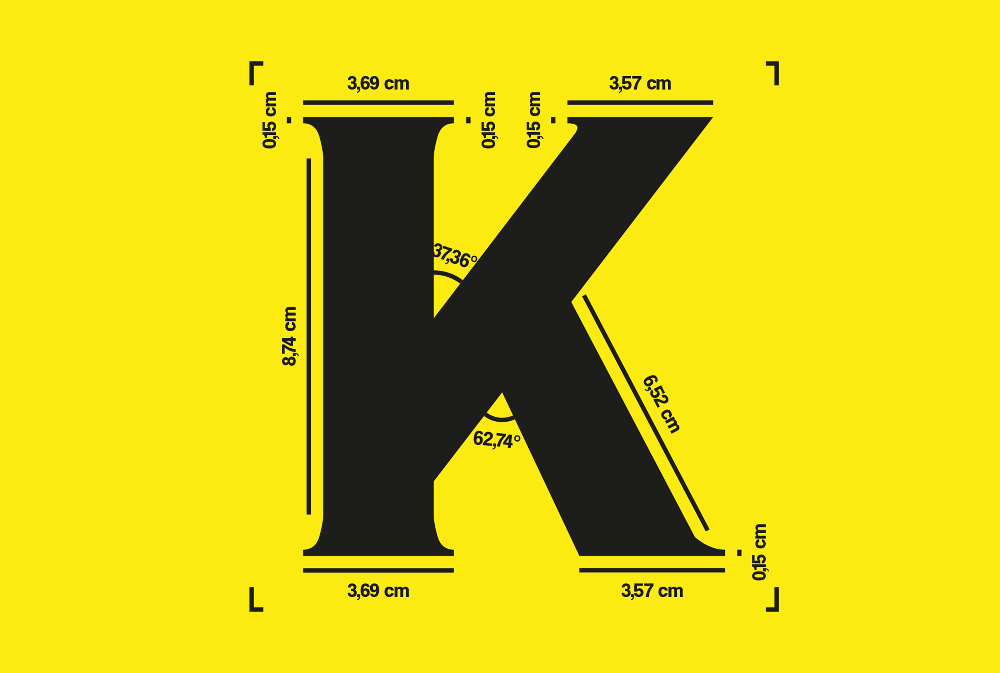
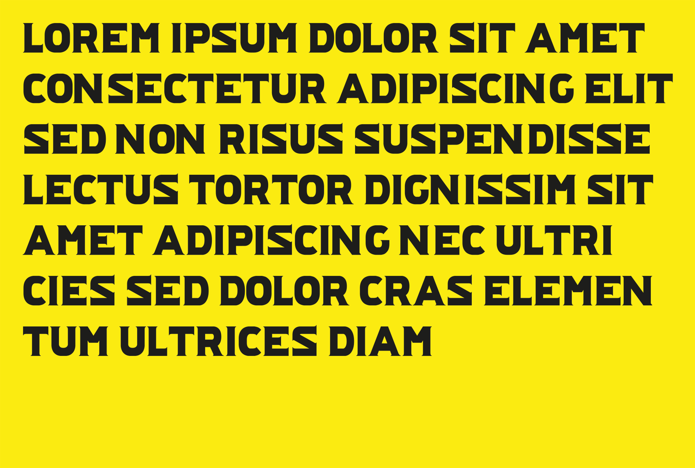

KREDERK.
Pour ce projet l'objetif etait de travaile la mise en page, avec de ressources que j'ai moi meme cherché et repertorié. Le thème de cette recherche etait le corp humain, son anatomie, son fonctionnement, son histoire et sa représentation artistique a travers le temps. J'ai reussi a rassembler une collection d'image variée et interessante, qui m'a permis de realiser une serie de mise en page abstraite et graphique, qui explore differente facette du corp humain. et notament la relation entre l'Homme et son porpre corps.
Liste de ressources utilisées :
-
1. Hans Christian Adam ( Ed. ), Eadweard Muybridge The Human and Animal Locomotion Photographs,
Cologne, Teschen, 2010
2. Philippe Comar, Une leçon d’anatomie Figures du corps à l’école des beaux-arts, Paris, Beaux-art de Paris les editions, 2010
3. Jérôme Pierrat Eric Guillon, Le tatouage à Birbi Les vrais, les durs, les tatoués, Clichy, Editions Larivière, 2005
4. Alain Corbin, jean-jacques courtine, georges vigarello, histoire du corps, Paris, Edition du Seuil, 2011
5. Marco Livingstone, Duane Michals Photographie de l’invisible, Paris, Edition de la Martinière, 1998
6. David Malin Katherine Roucoux, De l’atome à l’infini au-dela du visible, Vienne, Phaidon, 2002
7. G. Civardi, Notes sur l’Anatomie et Etudes du Mouvement, Italie, De Vecchi, 2000
8. Guy Pehourcq, Anatomie Artistique Vivante, Paris, Dessain et Tolra, 1986
9. G. Civardi, Morphologie externe du corps humain, Italie, De Vecchi, 2000
10. Mathias Duval, L’Anatomie Artistique, 1891


